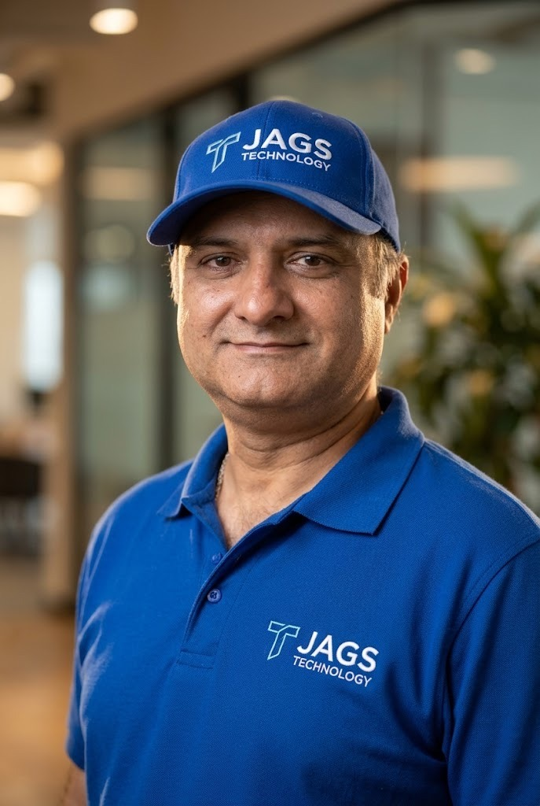

Centro de servicios y soporte técnico · Medellín
Seguridad y tecnología para tu local comercial y hogar
Innovación, soporte y solución a tu alcance.
Diseñamos, instalamos y damos soporte a sistemas de CCTV, redes y equipos de cómputo. Trabajamos principalmente con dueños y administradores de locales comerciales, y también con particulares que necesitan cámaras en casa. Atención a domicilio, sin sede abierta al público.

2014Fundada por Javier Gómez[cite: 10]
8Líneas de servicio[cite: 10]
CCTVMayor demanda: seguridad electrónica[cite: 10]
DomicilioMedellín · sin sede al público[cite: 10]
Quiénes somos
Un centro de soporte especializado, no una tienda
Atención a domicilio en Medellín
Selecciona tu zona para consultar disponibilidad de desplazamiento técnico:
📍 El Poblado: Alta disponibilidad para soporte de redes y sistemas CCTV. Visita técnica programada en menos de 24 horas[cite: 10].
En Jags Technology (JAGSTECHNOLOGY) ofrecemos servicios de alta calidad: soporte técnico informático —reparación de equipos y recuperación de datos—, diseño, instalación y mantenimiento de redes de datos, control de acceso, circuitos cerrados de televisión (CCTV) y sistemas contra incendios[cite: 10].
A quién ayudamos. El público principal son dueños, administradores o encargados de locales comerciales (tiendas, oficinas, consultorios, bodegas), de 25 a 50 años. También atendemos hogares particulares que necesitan cámaras, además de empresas, instituciones educativas y estudiantes que quieran mantener su infraestructura digital y de seguridad protegida y optimizada[cite: 10].
Qué nos diferencia. Atención rápida, respaldo técnico garantizado y soluciones a la medida. Diagnóstico rápido, personal experto y garantía según el plan contratado[cite: 10].